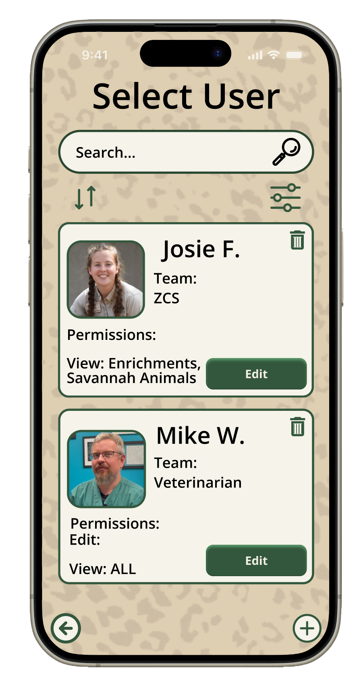

CHALLENGES CONQUERED
- The Problem: At the start of the project, I didn’t really understand how to use Figma that well…
- The Solution: I asked more experienced people for help. For example, I didn’t know how to create a specific shape I wanted. After a friend showed me, it was easy as pie.
- The Problem: At first, our user flow was overpopulated with clicks and unnecessary sections.
- The Solution: Our teacher and people we received feedback from gave us ideas on how to condense our user flow to be more efficient.
- The Problem: A lot of the boxes, text sizes and fonts were inconsistent with each other on different pages.
- The Solution: My team and I worked hard to fix the inconsistencies and make the prototype look so much better!

TECHNOLOGY STACK
- Tools Figma for Prototyping, Canva for presenting
CONCEPTS LEARNED
- Figma Prototyping: I learned how to prototype more efficiently in Figma, making more fluid connections between pages.
- Figma Auto Layout:I learned how to use auto layout in Figma, which lets you easily configure different parts of your screen with basically the same properties as css flex.
- WCAG Guidelines: I learned the importance of accessibility guidelines and also implemented the requirements to fit those guidelines so that anyone would be able to access the prototype.
HABITS OF MIND
- Investigation: Before we even did anything on Figma, we had to investigate multiple things: what animal enrichment actually was, and what the zoo staff would actually use the app for.
- Communication: Throughout the project, we communicated a lot with staff at the zoo to check if we were on the right track. We also communicated with other visitors experienced in UX Design to give us feedback on our prototypes.
- Reflection: After doing interviews and receiving feedback from the zoo staff, we had to take a step back and reflect on what information they had given us. We took into account whether we needed to change, keep or add things to our prototype.